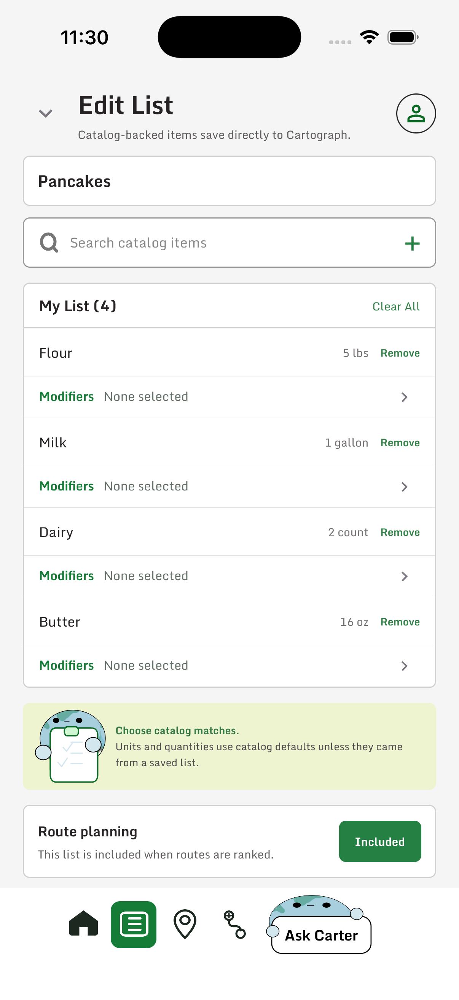
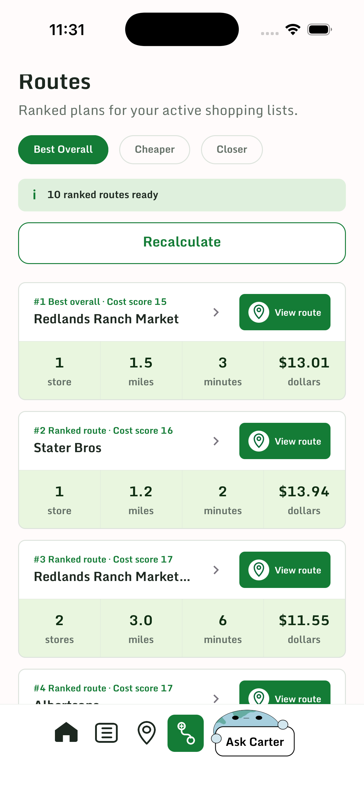
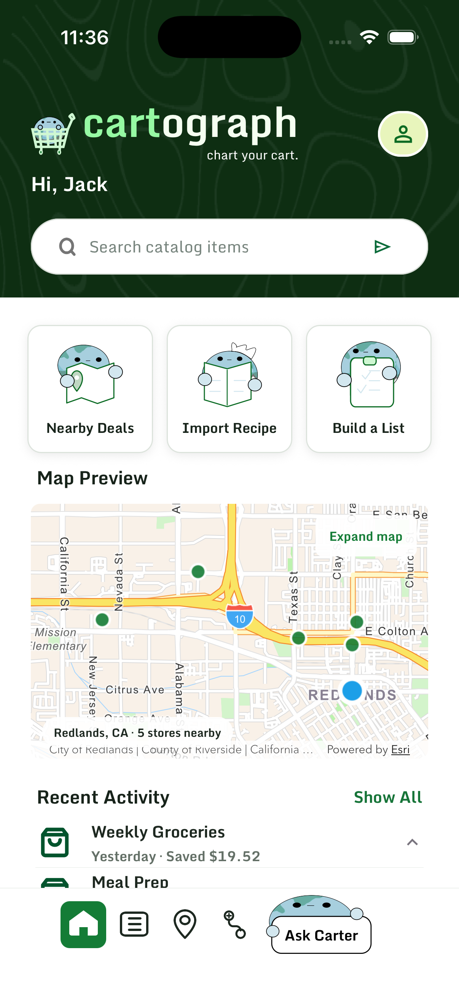
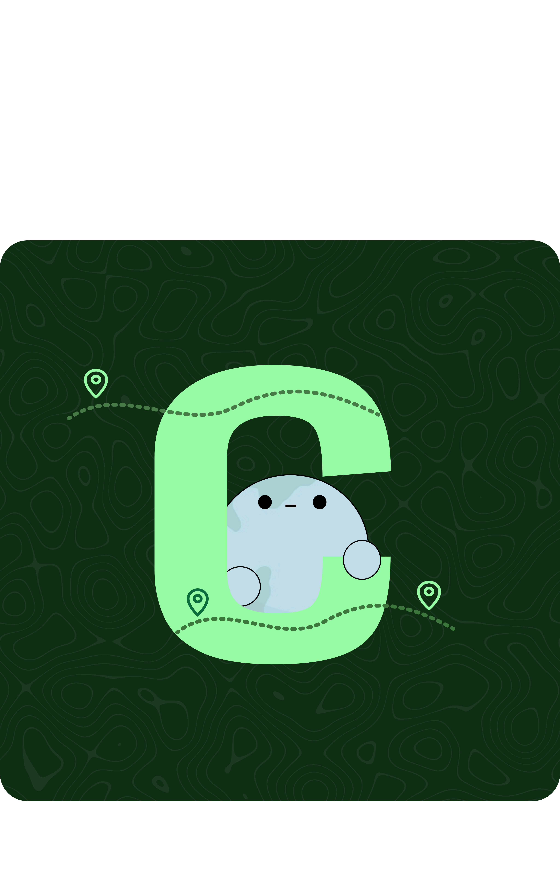

Is another store
worth the drive?
A case study
on case studies.
I made three versions of my CARTograph case study to see how the layout changes the way people read my work.
Explore the same project in three different styles, then tell me which one you prefer.
Explore the versions



CARTographMy product design case studyPick a version to explore.
The project
behind the layouts.
CARTograph helps shoppers compare grocery prices and decide whether another store is worth the drive. I designed the mobile experience in Figma while my teammates built the engineering, AI, and GIS components.
Our proof of concept placed second at the Esri hackathon.
View the team project on Devpost ↗Which one worked for you?
After you've explored the three versions, use the survey to tell me which you liked most and why.